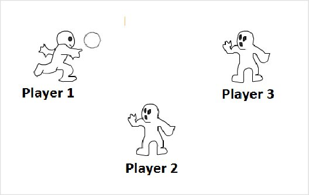
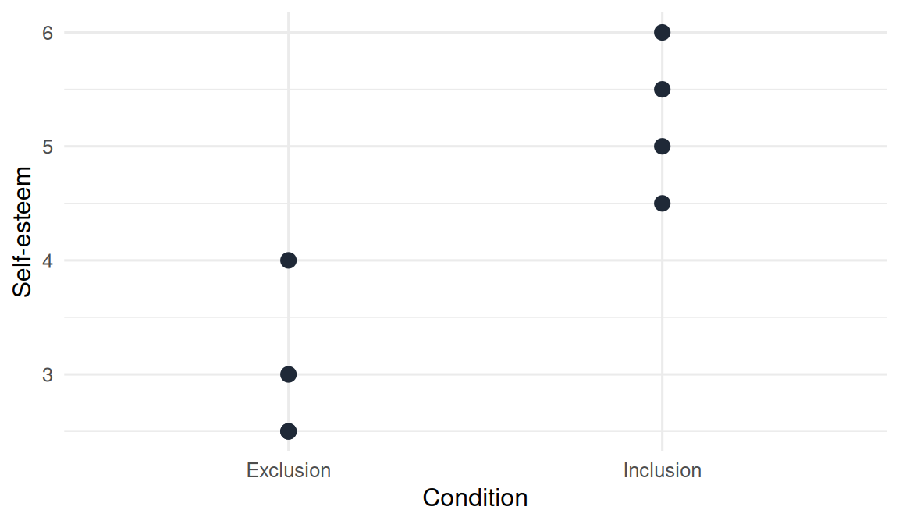
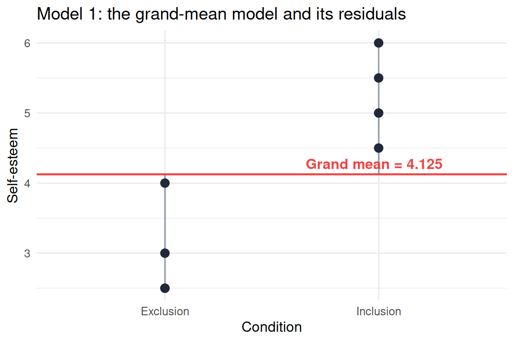
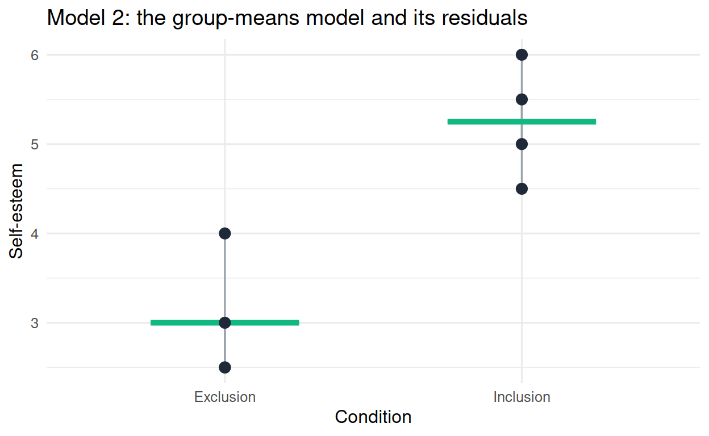

library(tidyverse)
cyberball <- data.frame(
participant = 1:8,
condition = c("Exclusion", "Exclusion", "Exclusion", "Exclusion",
"Inclusion", "Inclusion", "Inclusion", "Inclusion"),
self_esteem = c(2.5, 3.0, 4.0, 2.5,
5.5, 4.5, 6.0, 5.0)
)
cyberball14 The mean as a model: residuals, fit, and comparing models
14.1 Overview
Chapter 13 introduced the idea that the mean of a dataset can be thought of as the simplest possible statistical model: it makes one prediction (the mean value) for every observation. This chapter takes that idea and turns it into something you can compute in R. By the end of the chapter you will have:
- computed the residuals of two competing models on a small dataset,
- quantified each model’s overall miss with the sum of squared residuals,
- shown that a model that makes a separate prediction for each experimental condition fits better than a model that makes one prediction for everyone.
This is the same logic you applied to the aggression scores at the end of Chapter 9 (where you compared SS_grand to SS_group on the vgames_study dataset). The new thing here is the framing: each calculation is the fit of a specific model, and choosing between models is a comparison of how well each fits.
14.2 Residuals: what the model misses
For any model that makes a prediction for each observation, the residual of an observation is the simple difference
\[ \text{residual} = \text{observed} - \text{predicted}. \]
If a participant scored 6 on a 1-10 scale and the model predicted 5, the residual is +1: the participant scored one point above what the model expected. If a participant scored 3 and the model predicted 5, the residual is -2: the participant scored two points below the model’s prediction. The residual is positive when the model under-predicts, negative when it over-predicts, and zero when the model is exactly right.
Residuals are the central diagnostic quantity in statistical modeling. The sizes of the residuals tell you how well the model fits; the patterns in the residuals (across rows, across groups, across time) tell you whether the model is missing something systematic.
For the mean-only model from Chapter 13, every prediction is the same value (the mean). So every residual is just the observation’s distance from the mean.
14.3 A small worked example
The rest of this chapter uses a small fictional dataset inspired by a classic social-psychology paradigm called Cyberball, developed by Williams and colleagues to study social ostracism. In the paradigm, participants play a simple virtual ball-tossing game on a computer with two other “players” who they believe are also participants, but who are actually controlled by the experimenter.

There are two experimental conditions. In the inclusion condition, the ball is shared among all three players roughly evenly: the participant receives the ball regularly throughout the game and is, in effect, a full member of the group. In the exclusion condition, the two confederate “players” stop throwing the ball to the participant after a few initial passes, and continue tossing only between themselves for the remainder of the game; the participant is socially excluded from the group activity. After the game, participants complete self-report measures, here a 1-7 self-esteem scale. The question is whether being excluded lowers self-esteem.
We construct the dataset by hand so that you can verify every calculation that follows. Type these lines into your R script:
Eight participants, four per condition, one self-esteem score per participant. We will fit two competing models to these scores and compare how well each one fits.

14.4 Model 1: the grand-mean model
The simplest model says: ignore which condition each participant was in; predict the grand mean of self_esteem for everyone.
Compute the grand mean and store it. Then use mutate() (from Chapter 9) to add a column with the model’s prediction and a column with the residual:
grand_mean <- mean(cyberball$self_esteem)
grand_mean
# returns 4.125
cyberball <- cyberball |>
mutate(predicted_grand = grand_mean,
residual_grand = self_esteem - predicted_grand)
cyberballThe resulting table contains the original three columns plus two new ones: every row has the same predicted_grand (4.125), and residual_grand is each participant’s distance from that single prediction.
| participant | condition | self_esteem | predicted_grand | residual_grand |
|---|---|---|---|---|
| 1 | Exclusion | 2.5 | 4.125 | -1.625 |
| 2 | Exclusion | 3.0 | 4.125 | -1.125 |
| 3 | Exclusion | 4.0 | 4.125 | -0.125 |
| 4 | Exclusion | 2.5 | 4.125 | -1.625 |
| 5 | Inclusion | 5.5 | 4.125 | 1.375 |
| 6 | Inclusion | 4.5 | 4.125 | 0.375 |
| 7 | Inclusion | 6.0 | 4.125 | 1.875 |
| 8 | Inclusion | 5.0 | 4.125 | 0.875 |
Two checks on this table.
The residuals sum to zero. This is always true of residuals from the mean: the mean is the value at which positive and negative deviations exactly cancel.
sum(cyberball$residual_grand)
# returns approximately 0The residuals are not small. Some participants are more than 1.5 points away from the grand-mean prediction. Visually:

Each grey segment shows how far one participant’s actual score is from the model’s single prediction (the red line). The grey segments are the residuals. Visually, they are substantial, especially for the inclusion participants who all sit well above the grand mean and for several exclusion participants who sit well below.
14.5 Why we cannot just sum the residuals: squaring
We need a single number that quantifies how well the model fits, and the residuals are the obvious building blocks. But, as just noted, the residuals always sum to zero. The positive and negative deviations cancel out, and the sum tells you nothing about the size of the errors.
The standard fix is to square each residual before summing:
\[ \text{SS} = \sum_{i=1}^{n} (\text{observed}_i - \text{predicted}_i)^2. \]
This is the sum of squared residuals (or sum of squared errors), often abbreviated SS. You met it in Chapter 9 when you computed SS_grand and SS_group on the aggression data.
Two reasons squaring is the standard choice:
- Squaring removes the sign. Negative and positive residuals both contribute positively to the sum, so the cancellation problem disappears.
- Squaring penalizes large residuals more than small ones. A residual of 2 contributes 4 to the SS; a residual of 1 contributes only 1. Being off by a lot is treated as much worse than being off by a little. For most modeling problems in psychology this matches the kind of error you want to minimize.
In R, on the residuals we already computed:
SS_grand <- sum(cyberball$residual_grand^2)
SS_grand
# returns 12.875The number 12.875 is the total squared error of the grand-mean model on these eight observations. It has no natural interpretation in isolation; it is the comparison to the SS of another model that gives it meaning.
14.6 Model 2: the group-means model
A slightly less naive model uses two predictions instead of one: predict the mean of the exclusion condition for exclusion participants, and the mean of the inclusion condition for inclusion participants. The model is more complex (two numbers instead of one), and it uses information the previous model ignored (which condition each participant was in).
Using the group_by() + mutate() + ungroup() pattern from Chapter 9 (the same pattern you used to add a per-group statistic as a column):
cyberball <- cyberball |>
group_by(condition) |>
mutate(predicted_group = mean(self_esteem)) |>
ungroup() |>
mutate(residual_group = self_esteem - predicted_group)
cyberballThe exclusion group’s mean is 3.00 and the inclusion group’s mean is 5.25, so predicted_group is 3.00 for the first four rows and 5.25 for the last four. The residuals are each participant’s distance from their own condition mean.
| participant | condition | self_esteem | predicted_group | residual_group |
|---|---|---|---|---|
| 1 | Exclusion | 2.5 | 3.00 | -0.50 |
| 2 | Exclusion | 3.0 | 3.00 | 0.00 |
| 3 | Exclusion | 4.0 | 3.00 | 1.00 |
| 4 | Exclusion | 2.5 | 3.00 | -0.50 |
| 5 | Inclusion | 5.5 | 5.25 | 0.25 |
| 6 | Inclusion | 4.5 | 5.25 | -0.75 |
| 7 | Inclusion | 6.0 | 5.25 | 0.75 |
| 8 | Inclusion | 5.0 | 5.25 | -0.25 |
Compared to Model 1, the residuals are noticeably smaller. Visually:

Each green crossbar is a group mean (the prediction for that condition); the grey segments are the residuals from that prediction. Compared to the picture for Model 1, the grey segments are much shorter.
The sum of squared residuals confirms this numerically:
SS_group <- sum(cyberball$residual_group^2)
SS_group
# returns 2.7514.7 Comparing the two models
We can now place the two numbers side by side and ask what they tell us.
SS_grand
# 12.875
SS_group
# 2.75
SS_grand - SS_group
# 10.125SS_group is smaller than SS_grand by 10.125. Using the group means as predictions reduces the total squared error by 10.125 compared to using the grand mean. Expressed as a proportion of the original SS:
(SS_grand - SS_group) / SS_grand
# 0.786About 78.6 percent of the total squared error of the grand-mean model is accounted for by knowing the condition. In other words, condition explains a large fraction of the variability in self-esteem scores. The remaining 21.4 percent (the SS that survives in Model 2) is variability within each condition that the group-means model still cannot explain.
This is exactly the decomposition you saw in Chapter 9 with the aggression data, where the analogous proportion was about 20 percent. The arithmetic is the same; the conclusion is more dramatic here because the Cyberball example is constructed to have a strong condition effect.
A general fact, true in every case: SS_group is at most equal to SS_grand, never larger. Adding information (group membership) cannot make the fit worse. It can leave it unchanged (if condition is unrelated to the outcome, the two group means are nearly identical and the two models are nearly the same), but it cannot make it worse.
14.8 From SS to variance and standard deviation
A small notational aside that connects this chapter to ideas you already know. The variance of a variable, computed with var() in R, is essentially the sum of squared residuals from the mean, divided by n − 1:
\[ \text{var}(x) = \frac{\sum (x_i - \bar{x})^2}{n - 1} = \frac{SS_{\text{grand}}}{n - 1}. \]
The standard deviation (sd()) is the square root of the variance. So when you computed sd(aggression) in Chapters 6 and 9, you were implicitly summarizing the residuals of the grand-mean model on the aggression variable. Variance and SS differ only by a denominator; the conceptual content is the same.
Navarro (2018, Section 5.2) discusses variance and standard deviation in detail and lays out several alternatives (range, interquartile range). The squared-error perspective is one choice among several. It is the dominant choice in statistical modeling because it has nice mathematical properties (the mean is the value that minimizes SS, the variance decomposition is additive across nested models, and so on), but other choices are sometimes more appropriate (for example, the absolute deviation is more robust to outliers).
14.9 The trap of “perfect fit”
A reader paying close attention might ask: if smaller SS is better, why not use a model that predicts each participant’s exact score and achieves SS = 0?
The answer is that such a model would not be a model at all. It would have one parameter per observation (eight numbers for eight participants), which is the same amount of information as the data itself. It does not simplify. It does not reveal any pattern. It cannot generalize: if you collected a new participant, the model would have no prediction for them. It is a perfect description of this sample and an empty description of anything else.
A good model trades fit for simplicity. The grand-mean model uses 1 number (high simplicity, mediocre fit). The group-means model uses 2 numbers (still simple, much better fit). A model with 8 numbers achieves perfect fit but at the cost of becoming the data. Where to stop on this continuum is the central question of statistical modeling, and Chapter 19 will introduce it formally as the bias-variance trade-off. For now, what matters is the principle: complexity is not free.
14.10 Recalling Chapter 9
You did this same arithmetic in Chapter 9, on the larger vgames_study dataset. Recall the result: SS_grand on the aggression variable was approximately 307; SS_group (using the two condition means as predictions) was approximately 245; the proportion of squared error explained by condition was about 0.20. Now you can read that result with a slightly richer vocabulary: the grand-mean model fit a single number to 120 observations; the group-means model added the experimental condition as a second piece of information; the second model fit better, but a large fraction of the variability remained unexplained by condition.
In the chapters that follow, we keep adding information. Chapter 15 replaces the categorical “which group are you in?” predictor with a continuous predictor (one number per participant, like hours_weekly), and replaces the two-number group-means model with a line that can take any value as its prediction. Chapter 17 adds multiple predictors simultaneously. Each step is more complex than the last, and each step (in general) reduces the residual SS.
14.11 Looking ahead
By now you have:
- a working definition of a residual,
- a working definition of model fit (sum of squared residuals),
- the experience of comparing two competing models on the same data and seeing the better one win.
Chapter 15 takes the same logic and applies it to a continuous predictor: from a flat line at the mean to a sloped line that predicts a different value for each participant based on the value of some other variable. The arithmetic is more involved, but the framework is identical: data, model, predictions, residuals, fit.
14.12 Check your understanding
1. What is a residual?
2. What does the sum of the residuals from the grand mean always equal?
3. Why do we square the residuals before summing them to measure model fit?
4. What is the relationship between SS_grand (sum of squared residuals from the grand mean) and SS_group (sum of squared residuals from the group means) on the same dataset?
5. What is the relationship between the variance, the standard deviation, and the residuals from the mean?
6. Why is a model that achieves SS = 0 by predicting each observation exactly (using one parameter per observation) not a desirable model?
7. In this chapter’s Cyberball example, condition explained about 78.6% of the squared error. In Chapter 9, on the vgames_study data, condition explained about 20% of the squared error in aggression. Why is the proportion so different in the two examples?
14.13 References
Navarro, D. J. (2018). Learning statistics with R: A tutorial for psychology students and other beginners (Version 0.6). https://learningstatisticswithr.com
Williams, K. D., & Jarvis, B. (2006). Cyberball: A program for use in research on interpersonal ostracism and acceptance. Behavior Research Methods, 38(1), 174-180.